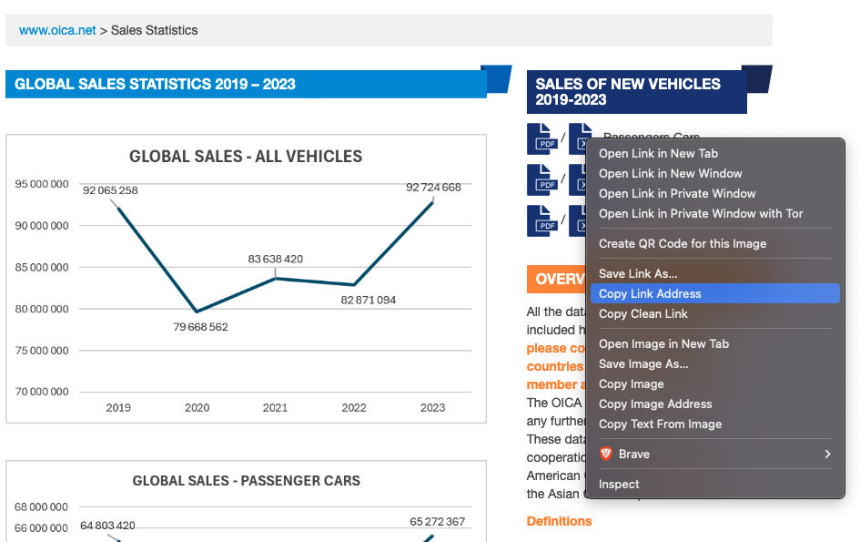
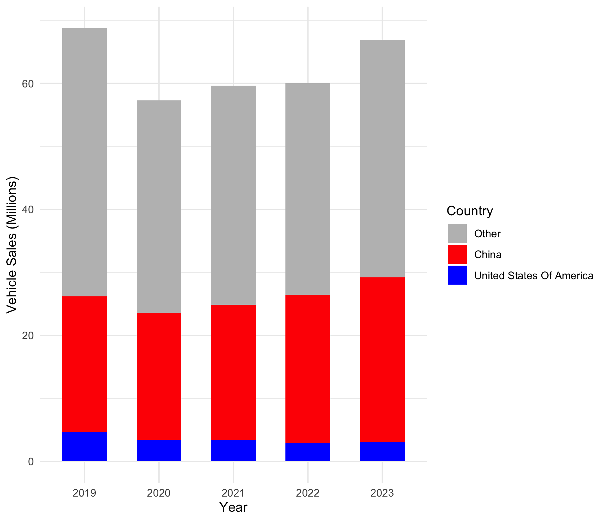

Due: Sep 23 by 11:59pm
Weight: This assignment is worth 10% of your final grade.
Purpose: When you start looking for data to address your project for this course, you will inevitably come across some rather messy data. Fear not! After completing this assignment, you will be well-prepared to tackle the messiness of real-world data! This assignment will put your data wrangling and cleaning skills to the test and will challenge you to become a master data janitor!
Assessment: Your submission will be assessed using the rubric at the bottom of this page.
Your mission, should you choose to accept it, is to clean up a relatively messy data file that contains sales of passenger cars by country between 2019 and 2023. The data are from the International Organization of Motor Vehicle Manufacturers (OICA). Your final product should be a tidy (long format) data frame with three columns: country, year, and sales. It should look like this:
#> # A tibble: 6 × 3
#> country year sales
#> <chr> <dbl> <dbl>
#> 1 Argentina 2019 333183
#> 2 Australia 2019 799263
#> 3 Austria 2019 320381
#> 4 Belgium 2019 550008
#> 5 Brazil 2019 2262073
#> 6 Bulgaria 2019 35371
That’s the goal - in this assignment, we’ll walk through how to get there step-by-step.
1. Get organized
Download and unzip this template for your project, then open the report.Rproj file.
Once RStudio opens, click on the report.qmd file. That is the primary file you will edit to conduct your analysis.
2. Document the data
Inside the data folder, there is a README.md file with some missing information. Click on that file and edit it to fill in the missing information. Here is some info that will help:
The main data file we’ll be working with is the pc_sales_2023.xlsx file in the data folder. You can find this file online at https://www.oica.net/category/sales-statistics/. The link to the original data file can be found by right-clicking on the Excel icon on the right side of the page, like this:

3. Preview the data
With messy Excel files, it is often helpful to first open and view them so you can learn about what might be needed to clean them up in R, such as how many lines you may need to skip at the top when reading in the data. To make sure Excel doesn’t corrupt your data, make a copy of the Excel file and open that copy with Microsoft Excel. You can keep that copy open throughout your data cleaning journey and can be confident that you haven’t corrupted the original file!
4. Load the data
Use read_excel() from the readxl package to read in the pc_sales_2023.xlsx data file.
5. Clean the names
When reading in a messy data file, one of the first things you’ll want to do is clean up the names. Try using clean_names() from the janitor package to clean all the names and use rename to rename a country column.
6. Reshape the data
Convert the data into a long format.
7. Convert year to a number
The values under the year column are characters with values like q1_q4_2019 in it. Get rid of those pesky q1_q4_ things and just keep the year values as a number.
8. Drop rows that aren’t countries
The country column contains a mix of countries and regions (e.g. "EUROPE"). We only want countries, so we need to use filter() to drop rows that contain regions. One way to do this is to define a regions vector and then use it to filter out rows that contain those regions (and anything else that isn’t a country). You’ll be hand-coding the regions, but there isn’t a really better way.
When finished filtering out the regions, convert the country values from “upper” case to “title” case (e.g. "FRANCE" should become "France").
9. Rearrange the rows
Use the arrange() function to sort the rows by year and country.
10. Save the cleaned file
Save your cleaned data frame to your data folder as a CSV file. Name the file my_clean_data.csv.
11. Render and submit
Click the “Render” button to compile your .qmd file into a html web page. Then open the report.html file in a web browser and proofread your report.
Does all of the formatting look correct? Make sure there are no errors in the rendered file before submitting it.
Once you’ve proofread your report, create a zip file of all the files in your R project folder for this assignment and submit it on the corresponding assignment submission on Blackboard.
BONUS: Make a summary visualization (+5%)
For a 5% bonus, add a code chunk at the bottom of your report to generate the plot below. If your cleaned data is not properly formatted, you can read in the pc_sales_clean.csv file and use it to make the plot.
Some hints to perfectly replicate the figure:
- Consider using
ifelse() to make a new variable for the bar color based on the country variable.
- You can use
fct_relevel() to re-order the country factors (the order of how they are stacked).
- The fill colors are
'grey', 'red', and 'blue'.
- The theme is
theme_minimal().

Grading Rubric
35 Total Points
| Organization & Formatting |
5
All formatting guidelines are followed; YAML is correctly filled out. |
4
Most formatting guidelines are followed; YAML is correctly filled out. |
3
Several or all formatting guidelines not followed; YAML contains elements that aren't updated from the template; template file wasn’t used. |
| Data Documentation |
5
The README file included in the template was updated with thoughtful and accurate information about the data. |
4
The README file included in the template was updated, but some of the information was missing or inaccurate. |
3
The README file included in the template was not updated, missing, or most of the information in it was inaccurate. |
| Data Cleaning |
18 - 20
All cleaning steps are completed and the resulting "clean" data frame is exactly (or very close to) the desired final state. |
15 - 17
All cleaning steps are completed, though there are one or two significant errors that prevents the resulting "clean" data frame from being in the desired final state. |
10 - 14
More than one of the cleaning steps are missing; multiple errors prevent the resulting "clean" data frame from being in the desired final state. |
| Technical things |
5
All code runs without errors; the html file can be compiled from the Rmd; all files included in the submitted .zip file. |
4
Code has only one or two error, otherwise runs; all files included in the submitted .zip file. |
3
Code has multiple errors; html file cannot be rendered without significant changes to the Rmd file; submitted .zip file is missing components necessary to reproduce analysis. |